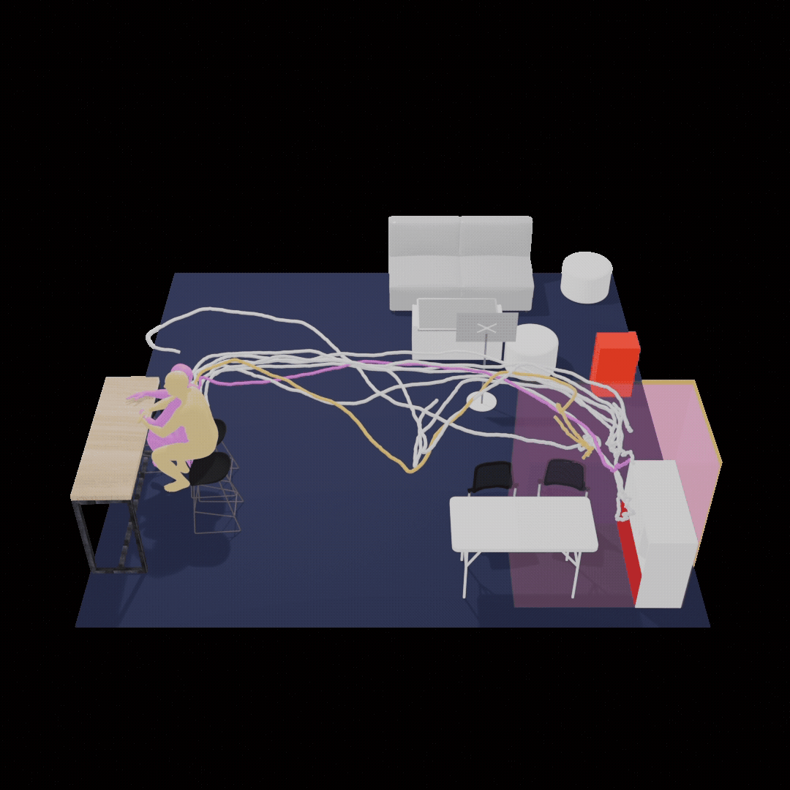
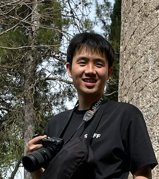

kim donghyuk
I'm a master's student at the Design AI Lab, advised by Kyung Hoon Hyun.
I build interactive AI systems to support the design of spaces and visual media. I aim to make AI a useful part of creative practice, while keeping people in control of the decisions that shape their work.
With a background in film and design, I have maintained an active practice in film production and production design. Films I've worked on continue to screen at international festivals.
Updates
- Three papers currently under review.
- Art Director, The Boy Who Fell to Earth · World Premiere, BIFF.
- Presented Behavior-Aware Anthropometric Scene Generation at CHI 2026, Barcelona.
Publications
Workshop paper & patent 2 items
Layer-Specific LLM Participation in Spatial Usability Evaluation
CHI 2026 Workshop · Position paper
Examining where LLM-based agents can—and cannot—stand in for human participants in spatial usability evaluation.
System for Automatic 3D Indoor Space Generation and Usability Verification Based on Anthropometric Data and Behavior Recognition
Kyung Hoon Hyun, Semin Jin, Donghyuk Kim
Patent application · KIPO · Filed 2026 · KR 10-2026-0040371
Filmography
The Boy Who Fell to Earth 2026
Art Director · dir. Jung Jaeseo
World Premiere · Busan International Film Festival 2026
Canned 2024
Art & Set Director · Dance film · dir. Lee Lyn
Best Film Award · Seoul Dance Film Festival 2025
Official selections · DWF Los Angeles, Vienna Shorts
Commercial & performance
- 2025Royal Culture Festival · Director of Photography
- 2024Adidas Originals ‘Mixtape’ · Campaign film
Grand prize · Adidas Originals × Eyesmag Emerging Filmmaker Competition - 2024KNCDC ‘INIT’ · Director of Photography
- 2024Royal Culture Festival · Director of Photography
Education & Experience
Education
Hanyang University · M.S.2026 – Present
Hanyang University · B.A. / B.S.2020 – 2026
Experience
Researcher · Design AI Lab2025 – Present
Visual Project Lead · FORUM D&P2024 – 2025
Military Service · Republic of Korea Army2021 – 2023